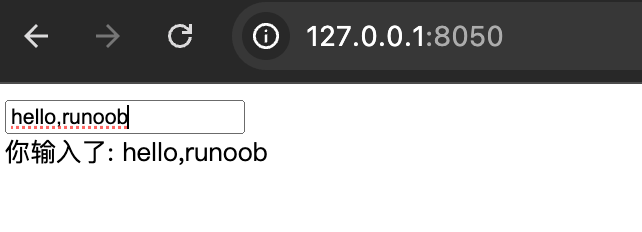
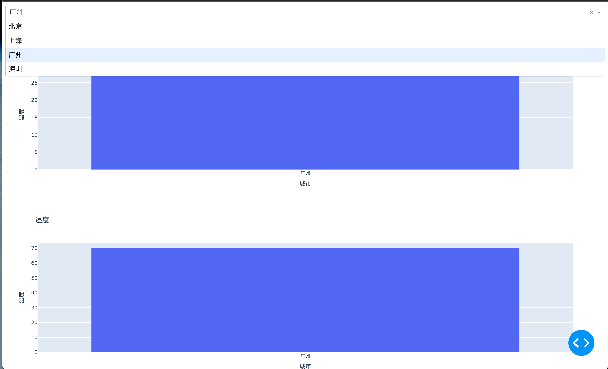

Dash よく使用されるインタラクティブコンポーネント
Dash は Python ベースであり、開発者が純粋な Python コードを使用してインタラクティブな Web アプリを構築できます。
Dash のコアコンポーネントの1つはdash.dcc（Dash Core Components）であり、スライダー、ドロップダウンメニュー、グラフなどの豊富な UI コンポーネントを提供します。これらのコンポーネントは、開発者が強力な Web アプリをすばやく構築するのに役立ちます。
dash.dccコンポーネントには以下が含まれますが、これらに限定されません：
- Graph：折れ線グラフ、棒グラフ、散布図などのさまざまなグラフを描画するために使用します。
- Dropdown：ドロップダウンメニュー。ユーザーは複数のオプションから1つを選択できます。
- Slider：スライダー。ユーザーはスライダーをドラッグして数値範囲を選択できます。
- Input：入力ボックス。ユーザーはテキストまたは数字を入力できます。
- Textarea：複数行のテキスト入力ボックス。長いテキストを入力するのに適しています。
- Checklist：チェックボックスリスト。ユーザーは複数のオプションを選択できます。
- RadioItems：ラジオボタンリスト。ユーザーは複数のオプションから1つを選択できます。
- DatePickerSingle 和 DatePickerRange：日付ピッカー。ユーザーは単一の日付または日付範囲を選択できます。
- Upload：ファイルアップロードコンポーネント。ユーザーはファイルをアップロードできます。
これらのコンポーネントはインタラクティブな Web アプリを構築するための基盤であり、開発者はこれらのコンポーネントを組み合わせることで複雑なユーザーインターフェースを作成できます。
最新バージョンの Dash では、以下の方法で dcc をインポートすることをお勧めします：
from dash import dcc
よく使用されるインタラクティブコンポーネント
| コンポーネント | 説明 | サンプルコード |
|---|---|---|
dcc.Input |
テキスト入力ボックスを作成します。 | dcc.Input(id='input', type='text', placeholder='请输入内容...') |
dcc.Dropdown |
ドロップダウンメニューを作成します。 | dcc.Dropdown(id='dropdown', options=[{'label': '选项1', 'value': '1'}], value='1') |
dcc.Slider |
スライダーを作成します。 | dcc.Slider(id='slider', min=0, max=10, step=1, value=5) |
dcc.Graph |
インタラクティブなグラフを作成します（Plotly.js ベース）。 | dcc.Graph(id='graph', figure={'data': [{'x': [1, 2, 3], 'y': [4, 1, 2], 'type': 'bar'}]}) |
dcc.Textarea |
複数行のテキスト入力ボックスを作成します。 | dcc.Textarea(id='textarea', value='请输入多行文本...') |
dcc.Checklist |
チェックボックスリストを作成します。 | dcc.Checklist(id='checklist', options=[{'label': '选项1', 'value': '1'}], value=['1']) |
dcc.RadioItems |
ラジオボタングループを作成します。 | dcc.RadioItems(id='radio', options=[{'label': '选项1', 'value': '1'}], value='1') |
dcc.DatePickerSingle |
日付ピッカー（単一選択）を作成します。 | dcc.DatePickerSingle(id='date-picker', date='2023-10-01') |
dcc.DatePickerRange |
日付範囲ピッカーを作成します。 | dcc.DatePickerRange(id='date-range', start_date='2023-10-01', end_date='2023-10-07') |
dcc.Markdown |
Markdown テキストをレンダリングします。 | dcc.Markdown('''# 标题\n- 列表项1''') |
dcc.Store |
クライアント側でデータを保存し、コールバック間でデータを共有します。 | dcc.Store(id='store', data={'key': 'value'}) |
dcc.Upload |
ファイルアップロードコンポーネントを作成します。 | dcc.Upload(id='upload', children=html.Div('拖放或点击上传文件')) |
dcc.Tabs |
タブコンポーネントを作成します。 | dcc.Tabs(id='tabs', children=[dcc.Tab(label='标签1', value='1')]) |
dcc.Tab |
単一のタブを作成します（dcc.Tabsと組み合わせて使用する必要があります）。 |
dcc.Tab(label='标签1', value='1') |
dcc.Interval |
コールバックを定期的にトリガーするコンポーネント。 | dcc.Interval(id='interval', interval=1000) |
dcc.Location |
URL を管理するためのコンポーネント。 | dcc.Location(id='url', pathname='/') |
dcc.Link |
ページナビゲーション用のハイパーリンクを作成します（dcc.Locationと組み合わせて使用する必要があります）。 |
dcc.Link('跳转到首页', href='/index.html') |
dcc.ConfirmDialog |
確認ダイアログを作成します。 | dcc.ConfirmDialog(id='confirm', message='确定要执行此操作吗？') |
dcc.ConfirmDialogProvider |
確認ダイアログを提供します（ボタンなどのコンポーネントと組み合わせて使用する必要があります）。 | dcc.ConfirmDialogProvider(html.Button('删除'), id='confirm-provider') |
dcc.Loading |
ローディングアニメーションコンポーネントを作成します。 | dcc.Loading(id='loading', children=[html.Div('加载中...')]) |
dcc.Download |
ファイルのダウンロードをトリガーするためのコンポーネント。 | dcc.Download(id='download') |
アプリケーション実例
シンプルな Dash アプリを作成する
以下は、シンプルな Dash アプリの例です。どのようにdash.dccコンポーネントを使用するかを示しています：
例
from dash import dcc, html
from dash.dependencies import Input, Output
# 创建一个 Dash 应用
app = dash.Dash(__name__)
# 定义应用的布局
app.layout = html.Div([
dcc.Input(id='input-text', type='text', value=''),
html.Div(id='output-text')
])
# 定义回调函数
@app.callback(
Output('output-text', 'children'),
[Input('input-text', 'value')]
)
def update_output(value):
return f'你输入的内容是: {value}'
# 运行应用
if __name__ == '__main__':
app.run_server(debug=True)
上記の例では、入力ボックスと入力内容を表示する領域を含むシンプルな Dash アプリを作成しました。
ユーザーが入力ボックスに内容を入力すると、アプリは表示領域の内容をリアルタイムに更新します。

使用dcc.Graphグラフを描画する
dcc.Graph 是 dash.dccで最もよく使用されるコンポーネントの1つで、さまざまなグラフを描画するために使用します。
以下は、dcc.Graphを使用して折れ線グラフを描画した例です：
例
from dash import dcc, html
import plotly.express as px
import pandas as pd
# 创建一个 Dash 应用
app = dash.Dash(__name__)
# 创建示例数据
df = pd.DataFrame({
'x': [1, 2, 3, 4, 5],
'y': [10, 11, 12, 13, 14]
})
# 使用 Plotly Express 创建折线图
fig = px.line(df, x='x', y='y', title='示例折线图')
# 定义应用的布局
app.layout = html.Div([
dcc.Graph(figure=fig)
])
# 运行应用
if __name__ == '__main__':
app.run_server(debug=True)
上記の例では、私たちはplotly.expressシンプルな折れ線グラフを作成し、dcc.Graphコンポーネントを介してアプリに表示しました。

使用dcc.Dropdownドロップダウンメニューを作成する
dcc.Dropdownコンポーネントを使用すると、ユーザーは複数のオプションから1つを選択できます。
以下は、dcc.Dropdownを使用した例です：
例
from dash import dcc, html
from dash.dependencies import Input, Output
# 创建一个 Dash 应用
app = dash.Dash(__name__)
# 定义应用的布局
app.layout = html.Div([
dcc.Dropdown(
id='dropdown',
options=[
{'label': '选项1', 'value': '1'},
{'label': '选项2', 'value': '2'},
{'label': '选项3', 'value': '3'}
],
value='1' # 默认选中的值
),
html.Div(id='dropdown-output')
])
# 定义回调函数
@app.callback(
Output('dropdown-output', 'children'),
[Input('dropdown', 'value')]
)
def update_output(value):
return f'你选择的是: {value}'
# 运行应用
if __name__ == '__main__':
app.run_server(debug=True)
上記の例では、ドロップダウンメニューを作成しました。ユーザーがオプションを選択すると、アプリはユーザーが選択した内容を表示します。

dash.dccコンポーネントの一般的な属性とコールバック
dash.dccコンポーネントの属性は非常に豊富で、各コンポーネントには特定の属性があります。
以下は、いくつかの一般的なコンポーネントの属性です：
dcc.Input：id：コンポーネントの一意の識別子。type：入力タイプ（例：text、numberなど）。value：入力ボックスの現在の値。
dcc.Dropdown：id：コンポーネントの一意の識別子。options：ドロップダウンメニューのオプションリスト。各オプションは辞書であり、label和value。value：現在選択されている値。
dcc.Graph：id：コンポーネントの一意の識別子。figure：表示するグラフオブジェクト。通常はplotly.express或plotly.graph_objectsによって作成されます。
dcc.Slider：id：コンポーネントの一意の識別子。min：スライダーの最小値。max：スライダーの最大値。value：スライダーの現在の値。
コールバック関数
Dash では、コールバック関数はユーザーインタラクションを処理するために使用されます。コールバック関数は@app.callbackデコレータで定義され、入力コンポーネントと出力コンポーネントを指定します。
以下は、シンプルなコールバック関数の例です：
例
Output('output-component', 'children'),
[Input('input-component', 'value')]
)
def update_output(value):
return f'你输入的内容是: {value}'
上記の例では、コールバック関数update_outputはinput-componentの値が変更されたときに呼び出され、新しい値を渡します。output-component。
実践的な応用例
dash.dccコンポーネントは実際のプロジェクトで広く使用されています。以下は、dash.dccコンポーネントを使用してインタラクティブなデータ可視化アプリを構築する実際の応用例です。
インタラクティブなデータ可視化アプリ
異なる都市の温度と湿度のデータを含むデータセットがあるとします。私たちはdash.dccコンポーネントを使用して、ユーザーが都市を選択し、対応する温度と湿度のグラフを表示できるインタラクティブなアプリを構築できます。
例
from dash import dcc, html
from dash.dependencies import Input, Output
import plotly.express as px
import pandas as pd
# 创建一个 Dash 应用
app = dash.Dash(__name__)
# 创建示例数据
df = pd.DataFrame({
'城市': ['北京', '上海', '广州', '深圳'],
'温度': [20, 25, 30, 28],
'湿度': [50, 60, 70, 65]
})
# 定义应用的布局
app.layout = html.Div([
dcc.Dropdown(
id='city-dropdown',
options=[{'label': city, 'value': city} for city in df['城市']],
value='北京' # 默认选中的城市
),
dcc.Graph(id='temperature-graph'),
dcc.Graph(id='humidity-graph')
])
# 定义回调函数
@app.callback(
[Output('temperature-graph', 'figure'),
Output('humidity-graph', 'figure')],
[Input('city-dropdown', 'value')]
)
def update_graphs(selected_city):
filtered_df = df[df['城市'] == selected_city]
temperature_fig = px.bar(filtered_df, x='城市', y='温度', title='温度')
humidity_fig = px.bar(filtered_df, x='城市', y='湿度', title='湿度')
return temperature_fig, humidity_fig
# 运行应用
if __name__ == '__main__':
app.run_server(debug=True)
上記の例では、ユーザーはドロップダウンメニューで都市を選択でき、アプリはユーザーの選択に応じて温度と湿度の棒グラフを更新します。

その他の拡張
クリックしてノートを共有
<p style="font-size:14px;">ノートは本記事の内容を拡張したものでなければなりません！</p><br> <p style="font-size:12px;"><a href="../tougao.html" target="_blank">記事投稿は、こちらをクリックしてください</a></p> <p style="font-size:14px;"><a href="../w3cnote/runoob-user-test-intro.html" target="_blank">登録招待コードの取得方法</a></p> <h3 class="text-muted"><i class="fa fa-info-circle" aria-hidden="true"></i> ノートを共有する前に<a href=";.html" class="runoob-pop">ログイン</a>が必要です！</h3> <p><a href="../w3cnote/runoob-user-test-intro.html" target="_blank">登録招待コードの取得方法</a></p>